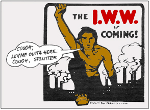

Greening of the IWW: What Happens When We Win?
By Jess Grant - Industrial Worker (August 1989)
Disclaimer: The views expressed here are not the official position of the IWW and do not necessarily represent the views of anyone but the author’s.
The time has come for the IWW to tackle head-on the question of post-industrial production, better known as “What do we do now that we won the General Strike?” We can no longer duck the issue by saying that workers’ committees will decide all that when the time comes. We must firmly put to rest the misconception that Wobblies are factory fetishists by taking a clear stand against the kinds of work that harm our planet or alienate us from our labor. Let us envision a world where the earth and our labor are honored equally.
Assuming that people are naturally inventive and enjoy contributing to their communities, and that people displaced from harmful industries will want to be retrained rather than put out to pasture, then we must find an answer to those who ask, “What will I do if my factory is shut down?” If millions of jobs are lost as the result of decommissioning harmful and unnecessary industries, then conversion to an ecological, self-managed economy will demand an imaginative program of apprenticeship and education.
Labor unions are simply the social manifestation of an instinctive solidarity found among working class people, and the IWW is no exception. Unions were born out of conflict and designed as instruments of class struggle, and from this clash they draw their meaning. But in the absence of struggle, when the boss class has been evicted and the workers are busy redesigning society, unionism becomes irrelevant. As “work” is replaced with “play”, the shell of unionism will wither away and leave in its place an intricate network of freely associating cooperatives.
That venerable Wobbly institution called Father Hagerty’s Wheel of Fortune, in which the various branches of industry are laid out in diagrammatic detail like a pizza with too many extras, was never meant to describe post-revolutionary society. It’s a handy guide for understanding how industry (as we know it under capitalism) is organized, and thus how to coordinate our own struggle, but it’s a lousy model for the future. Let’s try to imagine what the wheel would look like if we could depose the boss class and put our lives back in balance with nature.
Every person has a calling, some talent or passion for a particular activity that best expreses that individual. People seem happiest when they have the freedom to pursue that calling. A primary goal of self-managed production, then, is to create this freedom of action. Most callings fit into one of several basic archetypes. It’s these Jungian archetypes, weighted with the power of myth, which will form the basis of our new Wheel of De-Industry.
Let’s take a closer look at the old wheel and see what we’d want to eliminate or expand. The Department of Mining and Minerals (200) would, I suspect, be mostly eliminated. The mines would be shut and the oil pumps turned off. The bad environmental effects of this department are many and severe. Whether it’s the contamination of an oil spill; the air pollution caused by burning coal and oil; the devastation of strip-mining; or the radioactive legacy of uranium tailings, this department has no place in our utopian future.
The Department of Agriculture and Fisheries (100) will if anything expand, for people will still need food in a self-managed society (in fact, all that democratic participation really works up an appetite). The cities will depopulate as people flee the unnatural overcrowding of urbania and return to greener areas. Many of these people may turn to agriculture, reversing the historic trend of rural flight. And as farmers are weaned of their dependency on petrochemical concerns, they will turn to the labor-intensive techniques of organic farming.
Lumber workers (Industrial Union 120) and fishery workers (IU 130) would have to adhere to strict quotas of “sustainable yield”. Loggers, in particular, would become as involved in tree planting and eco-restoration as cutting timber. Fishery workers would inherit the task of restoring watersheds and spawning habitats.
The Department of General Construction (300) is a mixed bag. We’ve covered enough of the earth with our concrete swaddling to justify a full building moratorium. Even if more housing could be justified, building nuclear plants or jails could never be. It’s time we began voluntarily reducing our global population, diminishing rather than expanding our ecological impact as a species.
Yet there are some aspects of the pre-existent infrastructure which we may want to keep in good repair. While I don’t see the need to build any more docks, railroads, or highways, I can think of a few streets, bridges, and sewers I’d like to keep working (IU 310). Ships and buildings are generally useful items, and so I expect we’ll have IUs 320 and 330 around after the revolution as well.
The Department of Manufacture and General Production (400) is probably the most interesting to analyze. Unless everyone decides to go naked after the General Strike, the Textile workers (IU 410) will still have a job. And unless everyone decides to sit on the floor, the Furniture workers (IU 420) will still be needed.
Industrial Union 430, the Chemical workers, is an industry that pushes all my buttons. Do we really want to be producing more drugs, paint, rubber, explosives, chemicals, and plastics? While I would expect IU 430 to largely disappear, I can’t rule out entirely the possibility of some benign, even helpful, applications, perhaps in medicine.
I view IU 440, the Metal and Machinery workers, much like IU 430. My idyllic vision of the future doesn’t include many blast furnaces or steel mills, but does incorporate the skills of bicycle builders and tuba repair people. We may also find the metal workers useful if we decide to melt down our automobiles in order to make windmills and solar panels.
I cannot be objective about the Printers and Publishing House workers (IU 450) to which I belong. If the IWW’s motto is “Education, Organization, Emancipation”, then IU 450 is crucial to our union’s purpose. Books are a fundamental part of education; pamphlets and posters help us organize; and emancipation happens as a result of the first two.
After the revolution, when we’re all working a lot less, we’ll actually have time to read. The demand for books will go up as the demands on our time go down. But because we won’t be printing any more shareholders’ reports or income tax forms, our actual consumption of paper will go way down.
IU 460, the Food workers, will always be with us, sorting our fruit and milling our grains. But IU470, the Leather workers, is bound to be more controversial. I cannot stomach the wholesale slaughter of animals for profit, and so find it difficult to look upon body parts as a legitimate raw material. But others will undoubtedly point to native cultures where leather craft is an accepted art form and the death of the animal is not taken lightly.
I approve of IU 480, the Glass and Pottery workers. This area of activity will boom as mass manufacturing dies out and people rediscover the beauty of hand-made cups, bowls, and plates, as well as tiles and bricks. The Pulp and Paper Mill workers (IU 490) will probably be cut back but not eliminated. It would not do for me to tout the virtues of IU 450 (Printers) and then shut down the paper mills, source of the printers’ raw material. But so much of what’s printed today is garbage that we could easily make dramatic cuts in our use of paper.
The Department of Transportation and Communication (500) will go through a lot of change but remain indispensable. While I would like to see commercial air travel and the private automobile eliminated, I’m equally in favor of finding other environmentally sound ways of getting around and communicating. I find no redeeming value in television, yet love pirate radio.
The Department of Public Service (600) stands to grow the most of all. This is where our economy’s been most neglected—many of these industries are starved for resources because we’ve allowed them to come under the control of governments who are more interested in preparing for war than serving the public. No one would deny that we need more nurses, teachers, or postal workers (IUs 610, 620, and 670). If we intend to transplant the cities by building parks and greenbelts, then we’ll need a lot more gardeners and landscapers too (IU 650). If the new proposal for a sex trade workers Industrial Union 690 is endorsed by the IWW, we can then discuss whether we think this industry too will fade away after the revolution or linger on.
In place of the Department of Mining and Minerals, I suggest we create a new Department of the Arts (200). We’ll make the visual arts IU 210, the performing arts IU 220, the written arts IU 230, and the magical arts IU 240. For a union that places as much emphasis on singing as we do, we sure have neglected the arts. We should be ashamed that Utah Phillips has been relegated to a small and musty corner of IU 630—as a “recreational worker”, Utah has little in common with your average summer camp counselor or croupier.
While many of us are familiar with the visual, performing, and written arts, my call for a magical arts workers industrial union (IU 240) may seem a little strange to some. But I believe that their is a place in our society for witches, astrologers, psychics, and fortunetellers. It is primarily a women’s trade, which is one reason why I think the male dominated labor unions will have trouble accepting this as a legitimate calling. The tendency will be to laugh it off as “superstition”, but we must learn to accept peoples’ belief systems even if they’re different than ours. I’m no religious apologist, and heartily condemn the patriarchal institutions of Christianity, Judaism, and Islam, but I respect those spiritual traditions which honor life and renounce violence.
And what about those workers in today’s economy who can’t be found on Father Hagerty’s Wheel? What about the soldiers and bank clerks, and cops and stockbrokers? People who had the misfortune of getting stuck in a socially useless job but who are nonetheless working class, in fact if not in outlook? These people deserve a chance to find meaningful work too.
While it may be hopelessly utopian to try and diagram our future modes of production and exchange, no harm can come from discussing it. We have often been accused of offering little vision beyond the General Strike, and of lacking any articulate social program. Re-inventing Father Hagerty’s Wheel will go a long way towards answering those criticisms. I propose we discuss the question for a year or so, and then by vote of the General Membership, adopt a new Postindustrial Wheel along the lines I’ve described.